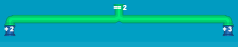
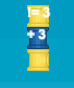

O usuário deve resolver os seguintes desafios da seguinte forma: Criar os canos existentes no sistema através destes comandos:
Criar uma bola com um valor inteiro
new ball = 5;
Cano atribuição
pipe is [operação básica] [número inteiro];
exemplo: pipe is + 3;
Cano estrutura condicional

if ball [== ou !=] [número inteiro]:
*indentação de dois espaços* [condição caso seja verdadeiro( cano esquerdo do if)]
else:
*indentação de dois espaços* [condição caso seja verdadeiro( cano esquerdo do if)]
endif;
if ball == 4:
pipe is + 4;
else:
pipe is -3;
endif;
Cano de estruturas de repetição

while ball [== ou !=] [número inteiro]:
*indentação de dois espaços* [condição caso seja verdadeiro( cano esquerdo do if)]
endif;
while ball != 3:
pipe is + 3;
endwhile;